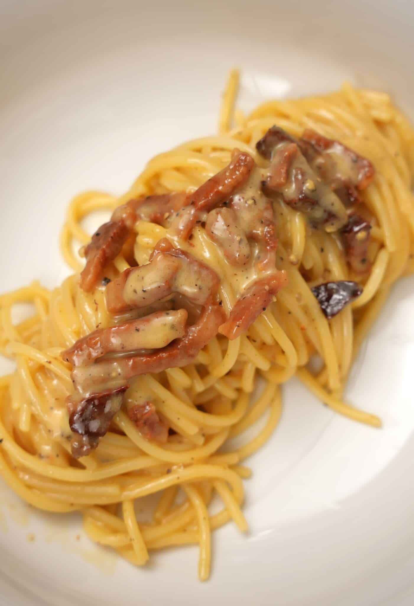

Description
Carbonara is an Italian pasta dish from Rome made with eggs, cheese, guanciale, and black pepper. The dish arrived at its modern form, with its current name, in the middle of the 20th century. The cheese is usually Pecorino Romano, Parmigiano-Reggiano, or a combination of the two. Spaghetti is the most common pasta, but fettuccine, rigatoni, linguine, or bucatini are also used. The dish is also known in Italy as pasta alla carbonara.
Ingredients
- Spaghetti
- Guanciale
- Eggs
- Parmesan cheese
- Black pepper
- Salt
Steps
- Bring a large pot of salted water to a boil. Add spaghetti and cook until al dente.
- Meanwhile, in a large skillet, cook guanciale over medium heat until crispy.
- In a bowl, whisk together eggs, Parmesan cheese, and black pepper.
- Drain spaghetti, reserving 1 cup of pasta water.
- Return spaghetti to pot and add guanciale. Toss to combine.
- Remove pot from heat and add egg mixture, stirring quickly to coat the pasta. Add pasta water as needed to create a creamy sauce.
- Season with salt and additional black pepper to taste.